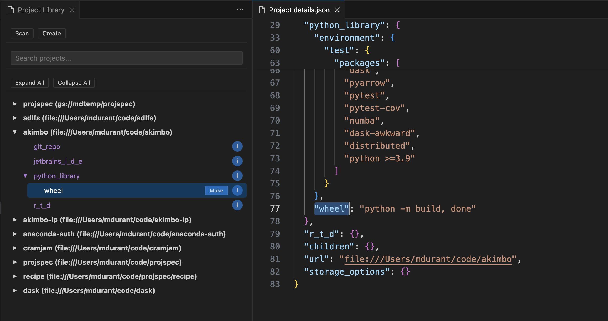

Am I coding in typescript?
TL;DR: projspec is a useful tool, but one that best shows its worth within
an IDE. While I have left creating a jupyter frontend to colleagues, I thought I'd
have a go for VSCode with the aid of some bots I know. Here's what happened.

projspec, briefly
This post in not about projspec as such, but, if you want to know,
projspec's scope is dealing with the wide
variety of project types that exist in the python ecosystem. A "project" in this sense
is just a directory of files with some specific metadata to declare what the function
of that stuff is. A project can be several different types at a time (e.g., uv for
python environment, git for version control, RTD for documentation), and
projspec allows you to introspect these details, "make" the various artifacts available
and find your desired project out of a potentially large library.
Here is the documentation: https://projspec.readthedocs.io/en/latest/
Why the frontend matters
These ideas were pretty well received, but of course I have worked first on the
python library API and CLI before anything else. Yet, most of the functionality makes sense mostly
in a development environment, an IDE. While my jupyter colleagues have been working on
their frontend, vscode is actually
more popular, even for python. Furthermore, it is already project-oriented (i.e.,
you open a new window for each project directory root), but has no library-of-projects
concept beside the "open recent" tab.
I am not a TypeScript dev, required for a vscode extension, but the API seems pretty sensible (sample — so long as I can craft the (python) CLI in a way to give reasonable JSON data back on calls.
What I did
Well, we've had a lot of conversations at Anaconda on what AI (LLMs) can and can't do, and this seemed like a perfect use case to me. The UI will not be complex, and the source of data is very well-defined (by me).

So this was my first case of interacting with agentic codegen, via opencode,
Claude Sonnet 4 and AWS Bedrock (paid by the corp).
The setup involved some steps which were far from clear...
Also, I ended up running everything in Docker as a sandbox, which ought to prevent
the bot from accidentally sending emails or all of my credentials wherever it pleases.
Call me paranoid.
The short result is, that the process, essentially a "vibe", resulted in a usable extension UI. It is included in the repo here but will still need some real review before I release this in any way.
(Aside: testing UIs is hard, whether in an app or webpage)
(Aside: why is the bot such a sycophant?? "Great Idea!" it says, but is it? Is this how the internet of text sounds, or is this how we are doomed to eventually talk to each other too?)
Next: PyCharm??
I did also attempt the same for PyCharm, which requires extensions written in kotlin
(I am even less familiar with this than TypeScript!). It turns out, that because most
of the code for vscode was around formatting JSON data and building HTML views, there
really was not much conversion required. The IDEA extension API is also very sane, and
my single prompt to convert the code (given the github URL of a suitable template to start from)
resulted in something that looked OK, although it certainly has functionality holes.
Funnily, the bot decided to create a logo for me, an SVG "P" letter.
In summary: there's potential here, and some forms of programming that I do really lend themselves to LLMs, especially as a first pass. But I need to learn the ways to use it. As others have noted, it then moves the bottlenecks to a) deciding what and how to make and b) making sure it's good.